第一 绪言
觇国非难。入其境，搜其市，无一幅自制之精密地形图，非文明国。无一幅自制之精密地质图（并地文土性等图），非文明国。不宁惟是；必殆将化为僵石，供后人摩挲叹息，谥曰绝种Extract species之祥也。
吾广漠美丽最可爱之中国兮！而实世界之天府，文明之鼻祖也。凡诸科学，发达已昔，况测地造图之末技哉。而胡为图绘地形者，分图虽多，集之则界线不合；河流俯视，山岳则恒作旁形。乖谬昏蒙，茫不思起，更何论夫地质，更何论夫地质之图。呜呼，此一细事，而令吾惧，令吾悲，吾盖见五印[6]详图，曾招飐于伦敦之肆矣。况吾中国，亦为孤儿，人得而挞楚鱼肉之；而此孤儿，复昏昧乏识，不知其家之田宅货
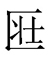
[7]，凡得几许。盗据其室，持以赠盗，为主人者，漠不加察，得残羹冷炙，辄大感叹曰：“若衣食我，若衣食我。”而独于兄弟行，则争锱铢，较毫末，刀杖寻仇，以自相杀。呜呼，现象如是，虽弱水[8]四环，锁户孤立，犹将汰于天行，以日退化，为猿鸟蜃藻，以至非生物。况当强种鳞鳞，蔓我四周，伸手如箕，垂涎成雨，造图列说，奔走相议，非左操刃右握算，吾不知将何以生活也。而何图风水宅相之说，犹深刻人心，力杜富源，自就阿鼻[9]。不知宅相大佳，公等亦死；风水不破，公等亦亡，谥曰至愚，孰云不洽。复有冀获微资，引盗入室，巨资既虏，还焚其家，是诚我汉族之大敌也。凡是因迷信以弱国，利身家而害群者；虽曰历代民贼所经营养成者矣，而亦惟地质学不发达故。地质学者，地球之进化史也；凡岩石之成因，地壳之构造，皆所深究。取以贡中国，则可知栾然尘球，无非经历劫变化以来，造成此相；虽涵无量宝
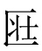
，足以缮吾生，初无大神秘不可思议之物，存乎其间，以支配吾人之运命。斩绝妄念，文明乃兴。然欲历举其说，则又非一小册子所能尽也。故先掇学者所发表关于中国地质之说，著为短篇，报告吾族。虽空谭几溢于本论，然读此则吾中国大陆里面之情状，似亦略得其概矣。第二 外人之地质调查者
中国者，中国人之中国。可容外族之研究，不容外族之探捡；可容外族之赞叹，不容外族之觊觎者也。然彼不惮重茧，入吾内地，狼顾而鹰睨，将胡为者？诗曰：“子有钟鼓，弗鼓弗考。宛其死矣，他人是保。”[10]则未来之圣主人，以将惠临，先稽帐目，夫何怪焉。左举诸子，皆最著名。其他幻形旅人，变相侦探，更不知其几许。虽曰跋涉山川，探索秘密，世界学人，皆尔尔矣；然吾知之，恒为毛戴血涌，吾不知何祥也。
千八百七十一年，德人利忒何芬Richthofen[11]者，受上海商业会议所之嘱托，由香港入广东，湖南（衡州，岳州），湖北（襄阳）遂达四川（重庆，叙州，雅州，成都，昭化）；入陕西（凤翔，西安，潼关），山西（平阳，太原）而之直隶（正定，保定，北京）。复下湖北（汉口，襄阳），往来山西间（泽州，南阳，平阳，太原），经河南之怀庆，以至上海，入杭州，登宁波之舟山岛，遍勘全浙。复溯江至芜湖，捡江西北部，折而之江苏（镇江，扬州，淮安），遂入山东（沂州，泰安，济南，莱州，芝罘）。碧眼炯炯，击节大诧若所悟。然其志未熄也；三涉山西（太原，大同），再至直隶（宣化，北京，三河，丰润），徘徊于开平炭山，入盛京（奉天，锦州），始由凤皇城而出营口。历时三年，其旅行线强于二万里，作报告书三册，于是世界第一石炭[12]国之名，乃大噪于世界。其意曰：支那大陆均蓄石炭，而山西尤盛；然矿业盛衰，首关输运，惟扼胶州，则足制山西之矿业，故分割支那，以先得胶州为第一着。呜呼，今竟何如？毋曰一文弱之地质家，而眼光足迹间，实涵有无量刚劲善战之军队。盖自利氏游历以来，胶州早非我有矣。今也森林民族[13]，复往来山西间，是皆利忒何芬之化身，而中国大陆沦陷之天使也，吾同胞其奈何。
千八百八十年，匈牙利伯爵式奚尼[14]初丧爱妻，欲借旅行以漓其恨。乃偕地理学者三人，由上海溯江以达湖北（汉口，襄阳），经陕（西安）甘（静宁，安定，兰州，凉州，甘州）而出国境；复入甘肃（安定，巩昌），捡四川（成都，雅州）云南（大理）由缅甸以去。历时三年，挥金十万，著纪行三册行于世。盖于利忒何芬氏探捡未详之地，尤加意焉。
越四年，俄人阿布佉夫[15]探捡北部之满洲，直隶（北京，保定，正定），山西（太原），甘肃（宁夏，兰州，凉州，甘州），蒙古等。其后三年，复有法国里昂商业会议所[16]之探捡队十人，探捡南部之广西，河南（河内），云南，四川（雅州，松潘）等。调查精密，于广西，四川尤详。是诸地者，非连接于俄法之殖民地者欤？其能勿惧！
先年，日本理学博士神保，巨智部，铃木之辽东，[17]理学士西和田之热河，学士平林，井上，斋藤之南部诸地，均以调查地质为目的。递和田，小川，细井，岩浦，山田五专门家，复勘诸处，一订前探捡者报告之谬，则去岁事也。
第三 地质之分布
昔德儒康德Kant[18]唱星云说，法儒拉布拉Laplace[19]和之。以地球为宇宙间大气体中析出之一份，回旋空间，不知历几亿万劫，凝为流质；尔后日就冷缩，外皮遂坚，是曰地壳。至其中心，议者綦众：有内部融体说，有内部非融体说，有内外固体中挟融体说。各据学理，以文其议。然地球中心，奥不可测，欲辨孰长，盖甚难矣。惟以理想名地面之始曰基础统系Fundamental formation[20]，其上地层，则据当时气候状态，及蕴藏僵石Fossil之种类，分四大代Era，细析之曰纪Period，析纪曰世Epoch。然此诸地层则又非掘吾人立足地，即能灿然毕备也。大都错综残缺，散布诸方。如吾中国，常于此见新，而于彼则获古。盖以荒古气候水陆之不齐，而地层遂难一致。犹谭人类史者，昌言专制立宪共和，为政体进化之公例；然专制方严，一血刃而骤列于共和者，宁不能得之历史间哉。地层变例，亦如是耳。今言中国，则以地质年代Geological Chronology为次。
（一）原始代或太古代Archean Era
地球初成，汽凝为水，是即当时之遗迹，居基础统系之上，而始为地质学家所目击者也。故吾侪目所能见之地层，以是为极古。其岩石以片麻，云母，绿泥为至多，然大都经火力而变质。捡眎石层，略无生物，惟据石类析之为：
（12）老连志亚纪Laurentian Period
（11）比宇鲁亚纪Huronian Period
二纪。后虽有发见阿屯（意即初生生物）[21]之说，而经德人眉彪[22]研究以来，已知其谬；盖尔时实惟荒天赤地，绝无微生命存其间也。所难解者，岩石中时含石灰石墨之属。夫石灰为动物之遗蜕，石墨为植物之槁株，设无生物存，何得有是？而或有谓是等全非由生物之力而来者，迄于今尚存疑焉。索之吾中国，则两纪均于黄海沿岸遇之。虽未能知其蕴藏何如，然太古代地层中，则恒产金银铜铂电石红宝石之属，意吾国黄海沿岸地方，亦当如是耳。
（二）古生代Palaeozoic Era
以始有生物，故以生命名者也，分六纪[23]：
（10）寒武利亚纪Cambrian Period
（9）志留利亚纪Silurian Period
（8）泥盆纪Devonian Period
（7）石炭纪Carboniferous Period
（6）二叠纪Permian Period
岩石繁多，以水成者，若砂，硅，粘板，石炭[24]等；以火成者，若花刚，闪丝，辉丝等。石类既自少而至多，生物亦由简以进复，然当（10）纪时，尚鲜见也。递及（9）纪，则藻类，三叶虫，珊瑚虫之族日盛，然惟水产物而止耳。入（8）纪，而鱼，而苇[25]，而鳞木，而印木，渐由水产以超陆产。然亦惟隐花植物而已，高贵生物，未获见也。降及（6）纪，而两栖动物及爬虫出，盖已随时日之变迁，以日趋于高等矣。是即造化自著之进化论，而达尔文[26]剽窃之以成十九世纪之伟著者也。
蕴藏矿物以是代为最富。（10）纪之见于中国者，自辽东半岛直亘朝鲜北部；虽土质确荦[27]，不宜稼穑，而所产金银铜锡之属，实远胜于他纪诸岩石，土人仅耕石田，于生计可绰有余裕焉。其（9）纪岩石，则分布于陕西至四川之山间，以产金著。其（8）纪岩石，则在云南北境及四川之东北。变质岩中，常含玉类，而岩石脉络间，亦少产银铁铜铅，搜全世界，以此纪岩石为至多，而石类亦均适于用。其上则（7）纪矣，产煤铁綦多，故以石炭名其纪。而吾中国本部，实蔓延分布，无地无之，合计石炭之量，远驾欧土（详见第五）；是实榜陀罗Pandora[28]之万祸箧底之希望，得之则日近于光明璀灿之前途，失之则惟愁苦终穷以死者也，吾国人其善所择哉。
（三）中生代Mesozoic Era
组成是代之岩石为粘板，角，硅，及粘土等，或遇如含有岩盐石炭石膏之地层，分三纪，即：
（5）三叠纪Triassic Period
（4）侏罗纪Jurassic Period
（3）白垩纪Cretaceous Period
是也。前纪生物已日归于消灭，故（5）纪时，鳞印诸木，衰落既久，而松柏，苏铁，羊齿诸科，乃代之握植界之主权。至（3）纪则无花果，白杨，柳，槠等诸被子植物出，与现世界几无大异矣。动物则前代已生之爬虫，日益发达，有袋类亦生，为乳哺类之先导。至（4）纪而诡形之龙类[29]（旧译作鼍），跋扈于陆地，有齿之大鸟[30]，飞翔于太空，盖自有生物以来，未有若斯之瑰奇繁盛者也。且菊石，箭石之属，亦大繁殖，其遗蜕遂造成（3）纪之地层，即学校日用之垩笔[31]，亦此微虫之余惠耳。至（3）纪时，生物界乃大变革，旧生动植，或衰或灭，而真阔叶树及硬骨鱼兴。
（5）纪之在中国者，为西藏，有用
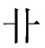
[32]物则有岩盐石膏铜铁铅等。（4）纪则自西伯利亚东方，以至中国之本部，虽时有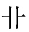
物，而极鲜石炭。（3）纪则并有用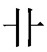
物亦鲜见矣，中国之极西方是也。（四）新生代Cenozoic Era
新生代者，地质时代中最终之地层，而其末叶，即吾人生息之历史也，别为二纪，曰：
（2）第三纪Tertiary Period
（1）第四纪Quaternary Period
其岩石为粗面，流纹，玄武，及粘土，砂砾，柔石炭等。其生物虽与今几无大异，然细察之，则不同之点綦多，如象，貘，张角兽，恐鸟[33]是也。如是盛衰递嬗，益衍益进，至洪积世Diluvium而人类生。
（2）纪分布于中国全部，其
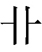
物有金属，且产石炭，然以新成，故远逊于石炭纪者。（1）纪则全世界无不见之，如中国扬子江北部之累斯Loess（黄色无层之灰质岩石），即为是时积聚之砂土；黄河附近之黄土，亦是时发育之垆坶之一种也。第四 地质上之发育
地球未成以先，吾中国亦气体中之一份耳，无可言者，故以地球成后始。
（一）太古代之中国 太古代之地球，洪水澎湃，烈火郁盘，地鲜出水，奚言生物，瞑想其状，当惟见洪流激浪而已。然火力所激，而地壳变形，昆仑山脉，忽然隆出；蒙古之一部分，及今之山东，亦离水成陆，崛起海中，其他则惟巨浸无际，怒浪拂天已耳。
（二）古生代之中国 地壳地心，鏖战既久，其后地心花刚岩之溶液，挟火力以泉涌，流溢海陆，地壳随之隆出水面，乃构成东方亚细亚之大陆。秦岭以北断层分走于诸方，即为台地，大苇鳞木印木等巨大植物，于焉繁殖。以北，则地层恒作波折形，似曾为山脉者。厥后经风雨之剥蚀，海浪之冲激，秦岭以北，渐成海底，无量植物，受水石之迫压，及地心热力，相率僵死。然地心火力，则犹冲突而未有已也，故复隆出水中，成阶级状之台地，所谓支那炭田者，实形成于此时焉。然其南部，尚潜海底，迨因受西北方之横压力，而秦岭以南之地层，遂成波状之崛起，即所谓支那山系（南岭）者是也。
（三）中生代之中国 火山之活动，至是稍衰，惟南方之一部，渐至沦陷，成新地中海，是实今日四川省之洼地（四川之赤盆砂地），而南支那之炭田也。迨喜马拉牙山崭然显头角，而南部中国始全为陆地。厥后南京与汉江之北，生分走北东之两断层，陷落而成中原，即为历代枭雄逐鹿地，以造成我中国旧史之骨子者也。
（四）新生代之中国 入新生代之初，水火之威日杀，甘肃及蒙古地方，昔为内海，至是亦渐就干涸，砂漠成焉。然以暴风所经营，故土砂埃尘，均随风飞动，运入黄河流域地方，积为黄土。扬子江北部，亦广大之砂漠耳，后以风之吹拂，雨之浸润，遂成累斯，故累斯大发育于中国。其他则与今日地形，几无大异矣。
第五 世界第一石炭国
世界第一石炭国！石炭者，与国家经济消长有密接之关系，而足以决盛衰生死之大问题者也。盖以汽生力之世界，无不以石炭为原动力者，失之则能令机械悉死，铁舰不神。虽曰将以电生力矣，然石炭亦能分握一方霸权，操一国之生死，则吾所敢断言也。故若英若美，均假僵死植物之灵，以横绝一世；今且垂尽矣，此彼都人士，所为抚心愁叹，皇皇大索者也。列邦如是，我国如何？利忒何芬曰：“世界第一石炭国！……”今据日本之地质调查者所报告，石炭田之大小位置，图眎于左，即：
●满洲七处
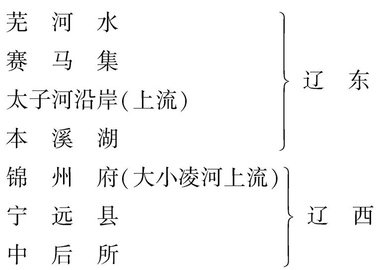
●直隶省六处
石门塞（临榆县）
开平
北京之西方（房山县附近）
保安州
蔚州 西宁州
●山西省六处
东南部炭田 西南部炭田
五台县 大同宁民府间炭田
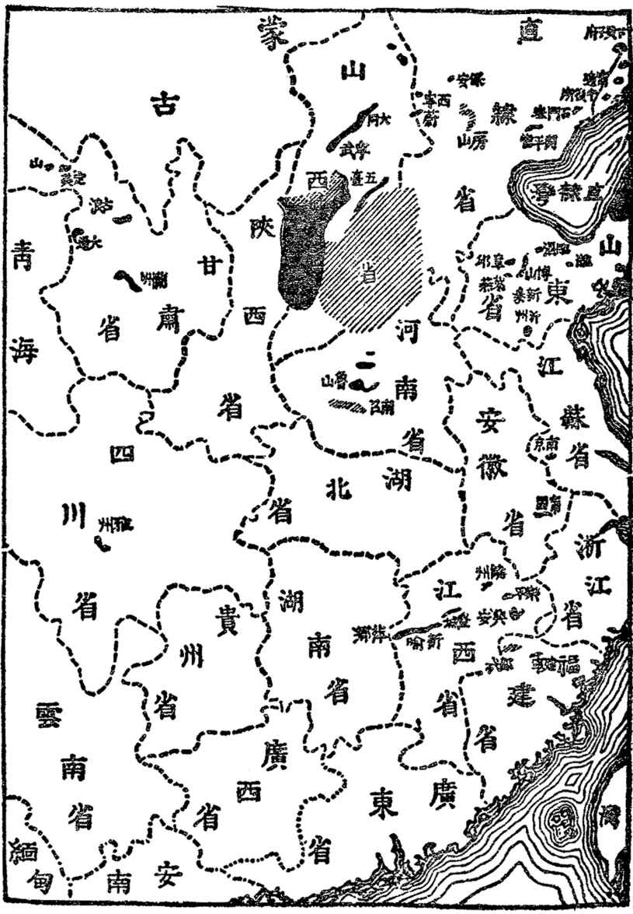
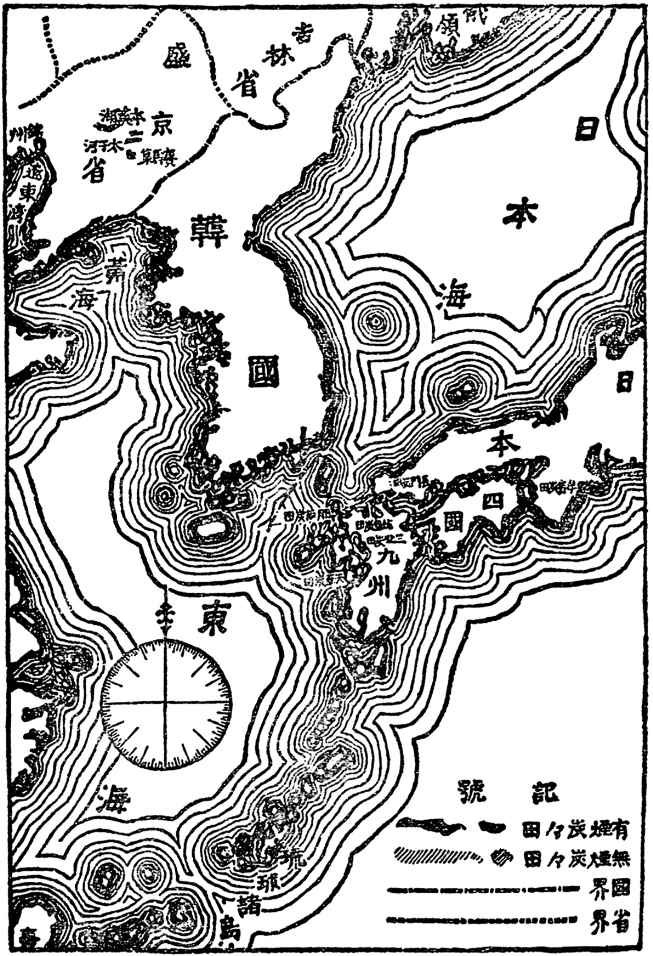
中路（译音） 西印子（译音）
●四川省一处
雅州府
●河南省两处
南召县 鲁山县附近
●江西省六处
丰城 新喻
萍乡 兴安
乐平 饶州
●福建省两处
邵武县 建宁府
●安徽省一处
宣城
●山东省七处
沂州府 新泰县
莱芜县 章丘县
临榆县 通县[34]
博山县及淄川县
●甘肃省五处
兰州府 大通县
古浪县 定羗县
山丹州
等四十三处是也。或谓此外有湖南东南部有烟无烟炭田，无虑二万一千方迈尔[35]，虽未得其的据，然吾中国炭田之未发见者，固不知其几许，宁止湖南？今仅就图中（见15页）山西省有烟无烟大炭田计之，约各一万三千五百方迈尔，合计七百万步[36]。加以他处炭田，拟一极少数，为一千万步。设平均厚率为三十尺，一立方坪之重量为八吨，则其总量凡一万二千亿吨，即每年采掘一亿二千万吨，亦可保持至一万年之久而未有尽也。况加以湖南传说之炭田，五百六十六万步即约六千八百亿吨乎。吾以之自熹，吾以之自慰。然有一奇现象焉，即与吾前言反对者，曰中国将以石炭亡是也。列强领土之中，既将告罄，而中国乃直当其解决盛衰问题之冲，列国将来工业之盛衰，几一系于占领支那之得失，遂攘臂而起，惧为人先。复以不能越势力平均之范围，乃相率而谈分割，血眼欲裂，直睨炭田。而我复麻木罔觉，挟无量巨资，不知所用，惟沾沾于微利以自贼，于是今日山西某炭田夺于英，明日山东各炭田夺于德[37]，而诸国犹群相要曰：“采掘权！采掘权！！”呜呼，不待十年，将见此[38]中原，已非复吾曹之故国，握炭田之旧主，乃为采炭之奴，弃宝藏之荡子，反获鄙夫之谥。虽曰炭田有以诲盗，而慢藏[39]不用，则谁之罪哉。
第六 结论
吾既述地质之分布，地形之发育，连类而之矿藏，不觉生敬爱忧惧种种心，掷笔大叹，思吾故国，如何如何。乃见黄神啸吟，白眚舞蹈，[40]足迹所至，要索随之，既得矿权，遂伏潜力，曰某曰某，均非我有。今者俄复索我金州复州海龙盖平诸矿地矣。初有清商某以自行采掘请，奉天将军诺之，既而闻其阴市于俄也，欲毁其约，俄人剧怒，大肆要求。[41]呜呼，此垂亡之国，翼翼爱护之，犹恐不至，独奈何引盗入室，助之折桷挠栋，以速大厦之倾哉。今复见于吾浙矣。以吾所闻，浙绅某者[42]，窃某商之故智，而实为外人伥，约将定矣。设我浙人若政府，起而沮尼之，度其结果，亦若俄之于金州诸地耳。试问我畏葸文弱之浙人，老病昏瞆之政府，有何权力，敢遏其锋；阖口自臧，犹将罹祸，而此獠偏提外人耳而促之曰：“若盍索吾浙矿。”呜呼，鬼蜮为谋，猛鹫张口，其亡其亡，复何疑焉。吾尝豫测将来，窃为吾浙惧，若在北方，则无瞢耳。彼等既饱尝外人枪刃之风味，淫掠之德政，不敢不慑伏谄媚，以博未来之圣主欢，夺最爱之妻女，犹不敢怨，更何有于毫无爱想之片土哉！若吾浙则不然，台处衢严诸府，教士说法，犹酿巨菑[43]。况忽见碧瞳皙面之异种人，指挥经营，丁丁然日凿吾土，必有一种不能思议之感想，浮游于脑，而惊，而惧，而愤，挥梃而起，莳刈之以为快。而外人乃复得口实，以要索，以示威，枭颅成束，流血碧地之惨象，将复演于南方，未可知也。即不然，他国执势力平均之说，群起夺地，倏忽瓜分，灭国之祸，惟我自速。即幸而数十年后，竟得独立，荣光纠纷，符吾梦想；而吾浙矿产，本逊他省，复以外族入室，罗掘一空，工商诸业，遂难优胜，于是失败迭来，日趋贫病。呜呼，浙人而不甘分致戎之谤也，其可不谋所以挽救之者乎。
救之奈何？曰小儿见群儿之将夺其食也，则攫而自吞之，师是可耳。夫中国虽以弱著，吾侪固犹是中国之主人，结合大群起而兴业，群儿虽狡，孰敢沮者，则要索之机绝。乡人相见，可以理喻，非若异族，横目为仇，则民变之祸弭。况工业繁兴，机械为用，文明之影，日印于脑，尘尘相续，遂孕良果，吾知豪侠之士，必有悢悢以思，奋袂而起者矣。不然，则吾将忧服箱[44]受策之不暇，宁有如许闲情，喋喋以言地质哉。
注 释
[5] 本篇最初发表于1903年10月在日本东京出版的《浙江潮》月刊第八期，署名索子。原为句读。
[6] 五印 指印度。古代印度分为东西南北中五部分，故称。
[7]
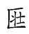
藏的古字。[8] 弱水 我国古书中关于弱水的神话传说很多，如《山海经·大荒西经》：昆仑之丘“其下有弱水之渊”。晋代郭璞注：“其水不胜鸿毛。”
[9] 阿鼻 梵文Avīcì的音译，意为“无间”，指痛苦无有间断。佛教传说中有所谓阿鼻地狱。
[10] “子有钟鼓，弗鼓弗考”等语，见《诗经·唐风·山有枢》。考，敲。东汉郑玄笺：“考，击也。”
[11] 利忒何芬（F.von Richthofen，1833—1905） 通译李希霍芬，德国地质地貌学家。1868年至1872年，他在上海西商会的指使和资助下，七次旅行我国内地，搜集地质、矿产等资料。回国后撰有《中国——亲身经历及其研究报告》三册和地图一本。他在此书和一些文章中，极力主张德国霸占我国胶州湾。
[12] 石炭 这里指煤。
[13] 森林民族 指日耳曼人。他们在公元一世纪之前，一直居住在北欧森林地带，过着游牧打猎的生活。
[14] 式奚尼（B.von Széchenyi，1837—1918） 匈牙利人。他于1879年来中国，与克雷德纳（G.Kreitner）、洛奇（L.Lóczy）一同探察我国西部和西南地区，回国后著有《一八七七年——一八八○年东亚旅行的学术成果》一书。
[15] 阿布佉夫（Б.А.Обручев，1863—1956） 通译奥勃鲁契夫，俄国地质地理学家。1892年至1894年间参加波丹宁为首的考察队来中国进行地质考察，回国后著有《亚洲中部、华北和南山》二卷。
[16] 里昂商业会议所 通译里昂商会，法国的商人团体之一。成立于1702年。它的主要职责是讨论所在城市或地区的事宜，向政府提出工商方面的建议等。1791年因立宪会议下令取消各地商会而解散，1802年恢复。1895年至1897年，法国矿业工程师杜克洛（Duclos）考察我国云南、贵州、四川地区，提出了关于当地矿物资源的报告书；随后，里昂商会为进一步考察对华进行贸易渗透的前景，向上述地区派出了以法国外交部委任的领事艾米尔·罗歇（Emil Rocher）率领的考察团。
[17] 神保 即神保小虎（1867—1924）；巨智部，即巨智部忠承（1854—1927）；铃木，即铃木敏。三人均为日本地质矿产学者，曾在1895年7月至10月到我国辽东半岛勘察地质矿产情况。下文的西和田，即西和田久学（1873—1936），地质矿产学者，1897年曾到我国热河进行金矿勘察。平林，即平林武（？—1935），地质矿产学者，1900年11月至翌年5月到我国江西、福建两省勘探地质矿产。井上，即井上禧之助，曾任日本地质调查所所长，1898年4月至6月曾到我国福建省建宁、古田等地进行地质矿产调查。和田，即和田维四郎（1856—1920），日本地质学的创始人之一。1899年曾到我国探察大冶铁矿，后又于1900年、1902年两度到我国探矿。小川，即小川琢治（1870—1941），地质矿产学者，1902年受日本外务省派遣到我国北方探矿。细井，即细井岩弥，曾任东京矿山监督署监督科长，他到我国探矿情况不详。山田，即山田邦彦，地质矿产学者，1903年6月曾到我国四川、贵州、云南等地勘探矿产资源。
[18] 康德（I.Kant，1724—1804） 德国哲学家。1755年发表《自然通史和天体论》，提出关于太阳系起源的星云假说，认为宇宙中无限混沌的原始物质彼此吸引、相撞、发热、旋转而成星云；旋转着的星云在其赤道面上甩出物质，依次形成太阳系诸行星。
[19] 拉布拉（P.Laplace，1749—1827） 通译拉普拉斯，法国科学家。他于1796年根据角动量守恒原则解释星云冷凝体的加速自转，独立地提出了与康德相似的论点。
[20] 基础统系 也称基础建造，指原始地壳。
[21] 阿屯（Eozone） 美国科学家达逊曾在隐生宙（即文中的原始代）形成的加拿大石灰岩中，发现类似原生动物有孔虫的遗迹，取名为Eozone。
[22] 眉彪（1825—1908） 又译梅标士，德国科学家。他经过研究，否定了隐生宙存在过有孔类原生动物的说法。
[23] 按寒武利亚纪后，当有奥陶纪（Ordovician Period）。
[24] 按石炭当系石灰之误。
[25] 苇 又作大苇（calamits），通译芦木，一种木贼纲的古植物。
[26] 达尔文（C.R.Darwin，1809—1882） 英国生物学家，进化论的奠基者。著有《物种起源》等。他提出以自然选择为基础的进化学说，阐明了在自然条件的作用下，生物从低级向高级发展、进化的客观规律，摧毁了各种唯心主义的神造论、目的论和生物不变论。
[27] 确荦 土地瘠薄，多石不平。唐刘禹锡《吊马文》：“结为确荦，融为坳堂。”
[28] 榜陀罗 通译潘多拉，希腊神话中的一个美女。主神宙斯把她送给厄匹米修斯为妻，并交给她一只箱子，内装疾病、灾害、罪恶等祸患，“希望”则藏在底层。她和厄匹米修斯见面时，打开箱盖，向人间放出各种祸患，却把“希望”关在箱里。
[29] 诡形之龙类 指恐龙。
[30] 有齿之大鸟 指始祖鸟。
[31] 垩笔 即粉笔，我国多用石膏制作；其他国家则多用白垩土制作。白垩土是一种主要由微体动物遗壳堆积而成的白色土质岩石。
[32]
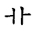
矿的古字。[33] 貘 指巨貘（Megatapirus），真貘科的古代哺乳动物。张角兽，当指恐角类（Dinocrata）动物，头上常有角状的骨质突起。恐鸟，又称莫滑（MOA）鸟，一种类似鸵鸟的走禽。
[34] 按这里的临榆县、通县，据本文所附地图，当为临淄县、潍县。
[35] 迈尔 英语mile的音译，即英里。
[36] 步 日本的面积单位，同坪，一坪合三点三○五七平方米。
[37] 山西某炭田夺于英 指1894年（光绪二十年）英国福公司攫取山西盂县平定矿权。山东各炭田夺于德，指1898年（光绪二十四年）德国政府攫取山东胶济铁路沿线三十里内矿权，次年德商瑞记洋行攫取山东境内五处矿权。
[38]
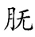
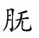
肥沃。《诗经·大雅·绵》：“周原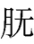
，堇荼如饴。”[39] 慢藏 意思是财物保管不严。《易·系辞上》：“慢藏诲盗。”
[40] 黄神啸吟 《淮南子·览冥训》：“西老折胜，黄神啸吟。”东汉高诱注：“为时（按指夏桀之时）无法度，黄帝之神伤道之衰，故啸吟而长叹也。”白眚，指西方帝国主义者。眚，灾害。
[41] 关于俄索金州诸矿，见1903年10月1日日本大阪《朝日新闻》：“九月三十日天津特电：奉天将军以金州厅、复州、盖平、海龙厅等矿山许请清商出资开采，该清商联络俄国人，自俄国人出资，其权利尽落俄国人之手，故奉天将军近令禁止，俄国领事盛气诘问，奉天将军乃电请外务部，乞与俄国公使开议，以保护矿山权云。”奉天将军，指当时的盛京将军增祺。清商，指买办商人梁显诚。
[42] 浙绅某者 指高尔伊，字子衡，浙江杭州人。1903年，他借开设宝昌公司承办浙东衢、严、温、处四府矿产之名，暗中以二百五十万两银价将四府矿产全部出卖给意大利惠工公司。同年10月3日，浙江留日学生曾在东京上野三宜亭集会抗议，并发布公开信声讨高尔伊的卖国行径。
[43] 教士说法，犹酿巨菑 1898年到1903年间，浙江的台州、处州、衢州、严州等地区，爆发过多次以反对教会为口号的群众反帝斗争，都遭到清政府的残酷镇压。计有1898年2月的海门起义，1900年7月的诸暨起义、8月的衢州起义、9月的宁海起义，1903年6月的宁海、桐庐起义等。菑，同灾。
[44] 服箱 驾车。《诗经·小雅·大东》：“皖彼牵牛，不可以服箱。”箱，车箱。